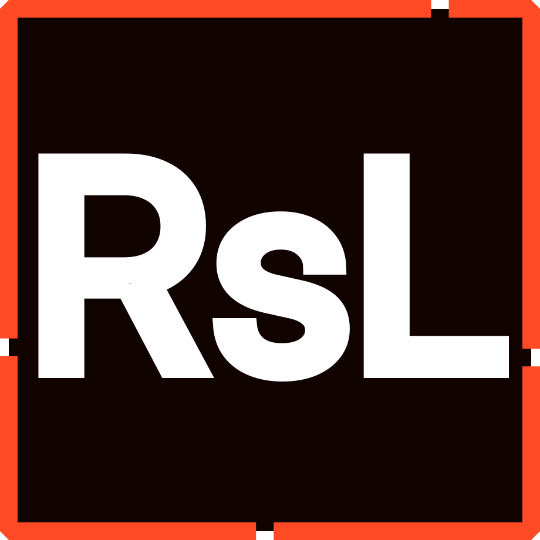

Red Sea Markup Language

&labelColor=%234929ca&color=%2327156f)
&labelColor=%23ad4734&color=%236e2d20)


the modern language designed to dynamically interpret different logic paths based on an host's OS and CPU architecture.
Why RSML?
Red Sea Markup Language is the powerful and robust fork of MF's CrossRoad Solution, a language designed to dynamically interpret different logic paths based on the local host OS and CPU architecture.
RSML, which is short for Red Sea Markup Language, is still in development, but the finished v3.0.0 will observe the following core features:
- A complete toolchain featuring buffers, readers, lexers, parsers and evaluators.
- The core library available in C#, Visual Basic, Python and many other languages.
- SDK for convenience and a more idiomatic usage of RSML in C#.
- A native shared library for those using RSML in C, C++ or languages that don't have official bindings.
- A CLI for interacting with the RSML toolchain easily.
- A static website for evaluating RSML on the go.
- First-class support for Visual Studio.
- Syntax highlighting for Visual Studio Code, JetBrains IDEs, Notepad++ and more.
RSML solves the issue of resolving logic paths dynamically based on a given host's characteristics. When assigned an host, which could be the local host, RSML solves the logic paths and returns the first match's associated value. The important part here is to note RSML does this dynamically: if you were to switch hosts or pass different data, RSML would adapt accordingly.
We :heart: open-source!